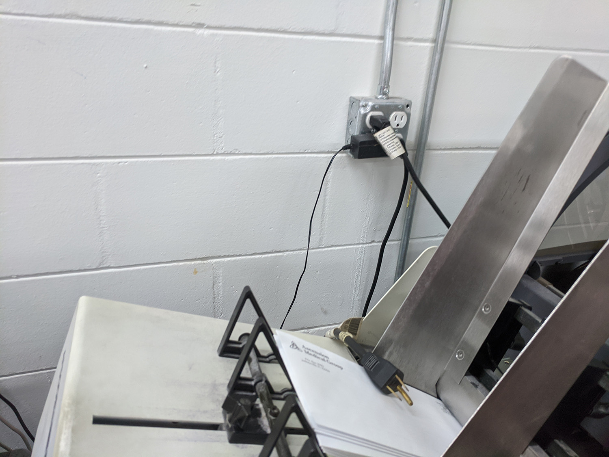
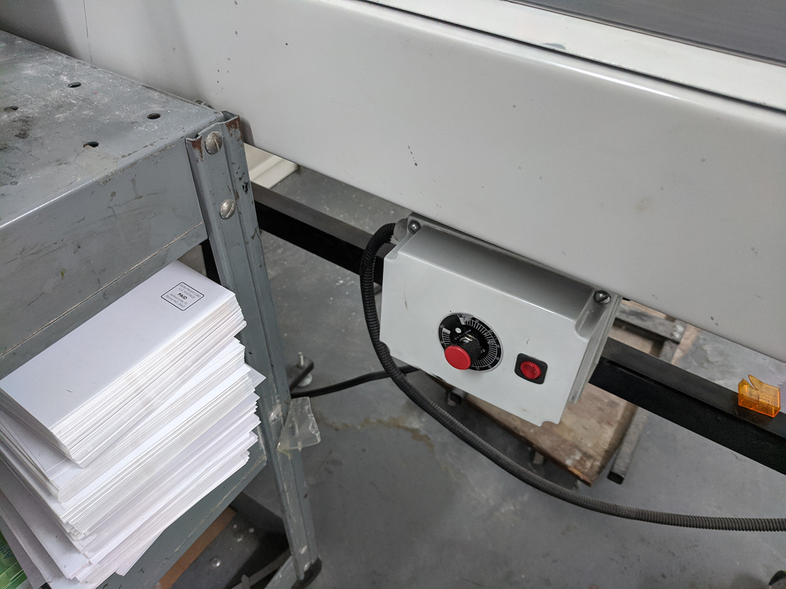
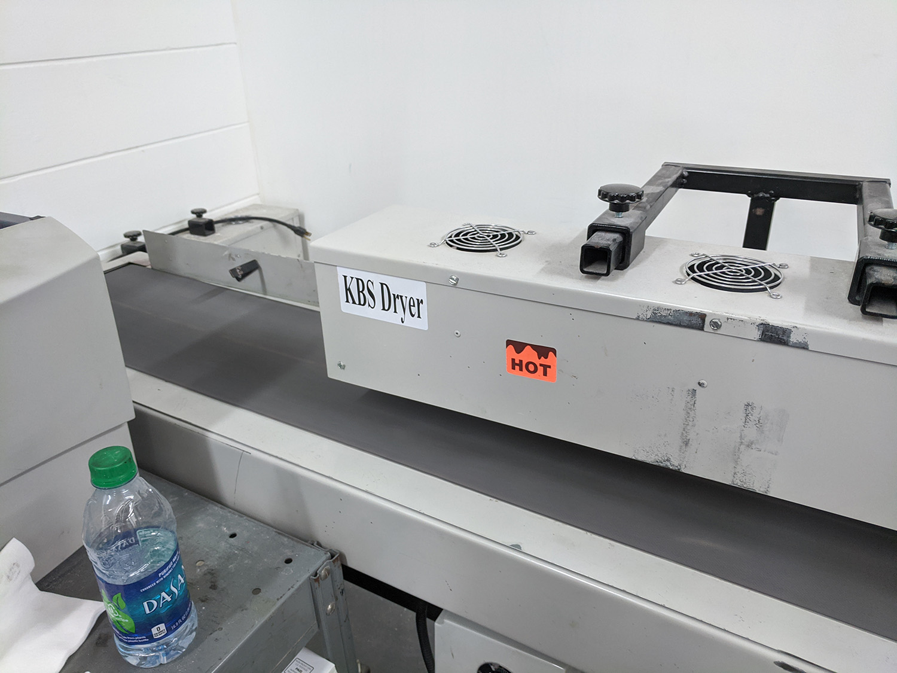
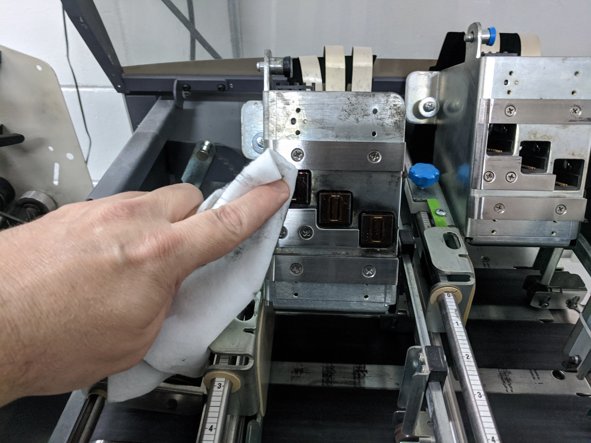
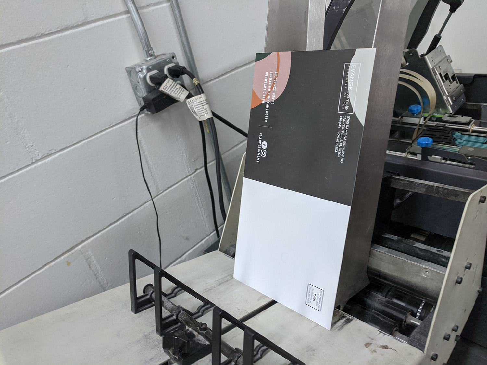
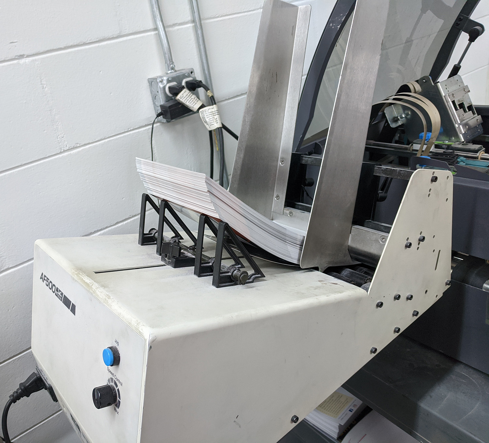
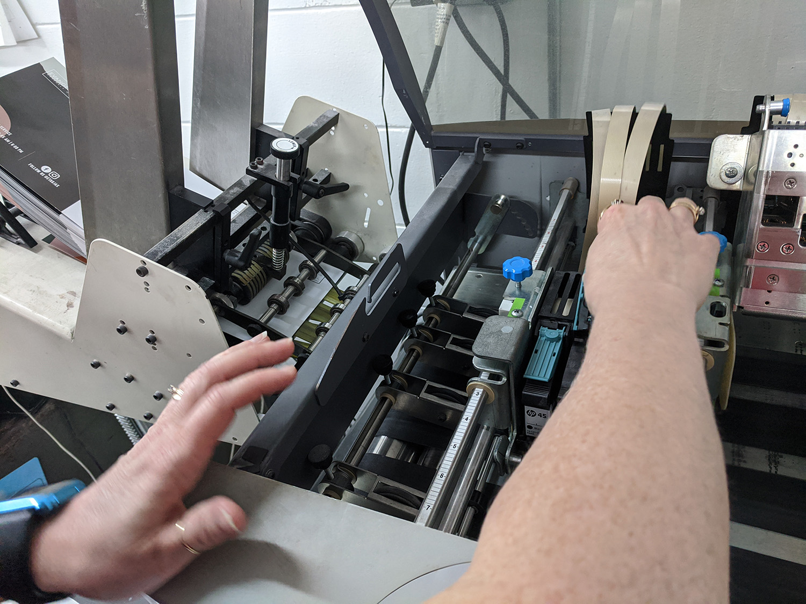

Plug in conveyor belt, turn on KBS dryer (both red switches) and if printing coated pices, roll dryer over conveyor belt. For coated pieces, turn conveyor belt to high speed. Uncoated items, slow the belt down.



Pour some water onto a cotton square, lift up the printheads on the PB, and wipe to clean out dried ink. Adjust the height of the printhead with the blue knob in front - raise for thicker pieces like newsletters or lower for thinner postcards.

Adjust the width of the feeder guides using a mailing piece. Slide one piece between the rollers and adjust the tightness so that the piece slides in and out with the proper amount of resistance (use your judgment).

Stack a couple of inches worth of mailing pieces in the feeder.

In Bulk Mail Professional, click on the Print Mail tab. Scroll down and look for the mailing templates that begin with PB - these are set for the PB printer, the older templates will NOT print.
Double click on the appropriate template
You will now see a screen showing which fields are printing and what lines they’re printing on. Check to make sure all fields noted on your results sheet are present. Click on the “Go to Preview Mode” button - top left icon that looks like a page with a magnifying glass.
Click on Print Records: 2nd icon - looks like a printer - check Current Page and click print. 39. One piece should be printed. Check location of mailing label and quality of print. Make adjustments as needed.
After printing first sample, if the address location needs to be adjusted, you can move the print head carriage up or down on the rails inside the printer. Return to step 8.

If printed address looks good, click on Print Records again and under Page Range enter 1 to 3, take these to Aga or CSR for approval.
If job is approved, hit Online on PB, push menu button, Plus button to get to #6 Clear Counter. Hit Enter, Plus to clear the counter. Hit Online to bring printer back online.
In Bulk Mailer, click on Print Records, check Tray range to print job out with pauses between trays, and hit Print to begin addressing the job.